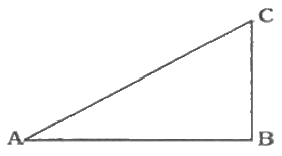

지적기능사 (2015-10-10 기출문제)
1과목: 지적일반(임의구분)
1. ∠ABC=90°, ∠CAB=30°, AB의 거리가 100.0m일 경우 BC의 거리는?

- 50.0m
- 57.7m
- 86.6m
- 100.0m
(정답률: 68%)

2. 토지소유자가 지적공부의 등록사항에 대한 정정을 신청할 때, 경계의 변경을 가져오는 경우 정정사유를 적은 신청서와 함께 제출하여야 하는 것은?
- 등록사항 정정 측량성과도
- 경계복원측량성과도
- 지적도 또는 임야도 사본
- 토지분할측량성과도
(정답률: 71%)
3. 지적측량을 크게 2가지로 구분할 때 그 구분이 옳은 것은?
- 도근측량과 세부측량
- 삼각측량과 세부측량
- 기초측량과 수준측량
- 기초측량과 세부측량
(정답률: 88%)
4. 임야조사사업 당시의 재결기관은?
- 도지사
- 임야조사위원회
- 고등토지조사위원회
- 임시토지조사국
(정답률: 76%)
5. 토지이동 신청에 관한 특례와 관련하여 사업의 착수ㆍ변경 및 완료 사실을 지적소관청에 신고하여야 하는 대통령령으로 정하는 토지개발사업이 아닌 것은?
- 「주택법」에 따른 주택건설사업
- 「산업입지 및 개발에 관한 법률」에 따른 산업단지개발사업
- 「공유수면 관리 및 매립에 관한 법률」에 따른 매립사업
- 「국토의 계획 및 이용에 관한 법률」에 따른 토지형질변경사업
(정답률: 60%)
6. 경위의의 시준축과 수평축이 직교하지 않아 생기는 오차의 처리 방법으로 옳은 것은?
- 망원경을 정위, 반위로 측정하여 평균값을 취한다.
- 시독의 위치를 변경하여 측정한 값의 평균값을 취한다.
- 두 점 사이의 높이를 같게 하여 측정한다.
- 연직축과 수평 기포관축과의 직교를 조정한다.
(정답률: 71%)
7. 토지대장과 임야대장에 등록할 사항이 아닌 것은?
- 토지의 소재
- 소유권 지분
- 지번
- 면적
(정답률: 62%)
8. 토지 거래의 안전과 국민의 토지 소유권을 보호하기 위해 만들어진 지적제도는?
- 세지적
- 법지적
- 과세지적
- 경제지적
(정답률: 88%)
9. 공간정보 구축 및 관리 등에 관한 법률상 등록전환의 정의로 옳은 것은?
- 축척을 바꾸어 등록하는 것
- 면적을 바꾸어 등록하는 것
- 지적공부에 등록된 지목을 다른 지목으로 바꾸어 등록하는 것
- 임야대장 및 임야도를 등록된 토지를 토지대장 및 지적도에 옳겨 등록하는 것
(정답률: 83%)
10. 도곽선의 역할과 거리가 먼 것은?
- 지적측량 기준점 전개시의 기준
- 측량준비도에서의 북방향 표시의 기준
- 인접 도면과의 접합 기준
- 행정구역 결정의 기준
(정답률: 60%)
11. 토지의 경계가 자연적인 지형지물 즉 도로, 담장, 울타리, 도랑, 하천 등으로 이루어진 것을 무엇이라 하는가?
- 보증경계
- 고정경계
- 일반경계
- 확정경계
(정답률: 80%)
12. 토지가 해면에 접하는 경우 지상 경계를 결정하는 기준은?
- 평균중조위선
- 최대만조위선
- 최저만조위선
- 최고간조위선
(정답률: 85%)
13. 지적소관청이 지적공부를 정리하여야 하는 경우가 아닌 것은?
- 지적공부를 복구하는 경우
- 토지의 이동이 있는 경우
- 지번을 변경하는 경우
- 토지대장의 등본을 교부하는 경우
(정답률: 65%)
14. 경위의측량방법으로 세부측량을 하는 경우 측량결과도에 기재하여야 할 사항이 아닌 것은?
- 지상에서 측정한 거리 및 방위각
- 측량 대상 토지의 경계점 간 실측거리
- 지적도의 도면번호
- 도곽선의 신축량 및 보정계수
(정답률: 64%)
15. 지적소관청이 시ㆍ도지사로부터 축척변경 승인을 받았을 때 관련 사항을 며칠 이상 공고 하여야 하는가?
- 60일 이상
- 40일 이상
- 30일 이상
- 20일 이상
(정답률: 45%)
16. 대장에 등록하는 면적의 단위 기준은?
- 제곱킬로미터
- 제곱미터
- 제곱센티미터
- 헥타르
(정답률: 87%)
17. 행정구역선이 2종 이상 겹치는 경우의 제도방법은?
- 최상급 행정구역선만 제도한다.
- 최상급 행정구역선과 최하급 행정구역선을 경계선 양쪽에 제도한다.
- 최하급 행정구역선만 제도한다.
- 최상급 행정구역선과 최하급 행정구역선을 교대로 제도한다.
(정답률: 72%)
18. 3cm가 늘어난 50m 길이의 줄자로 거리를 측정한 값이 500m일 때 실제거리는 얼마인가?
- 499.3m
- 501.5m
- 500.3m
- 550.5m
(정답률: 77%)
19. 공간정보의 구축 및 관리 등에 관한 법률의 법규상 임야도의 축척은 모두 몇 종인가?
- 2종
- 3종
- 4종
- 5종
(정답률: 80%)
20. 국가의 통치권이 미치는 모든 영토를 필지 단위로 구획하여 지번, 지목, 경계 또는 좌표와 면적 등을 결정하여 지적공부에 등록ㆍ공시해야만 효력이 인정된다는 이념은?
- 지적국정주의
- 지적형식주의
- 지적공개주의
- 실직적 심사주의
(정답률: 73%)
2과목: 지적측량(임의구분)
21. 둘 이상의 기지점을 측정점으로하여 미지점의 위치를 결정하는 방법은?
- 전방교회법
- 후방교회법
- 복전진법
- 단전진법
(정답률: 67%)
22. 지적도 도관선의 신축량이 각각 △x1 =+0.4mm, △x2=-0.1mm, △y1=-2.0, △y2=+2.1mm 일 때, 이 지적도의 신축량은? (단, △x1은 왼쪽 종선의 신축된 차, △x2는 오른쪽 종선의 신축된 차, △y1은 위쪽 횡선의 신축된 차, △y2는 아래쪽 횡선의 신축된 차)
- -0.4 mm
- -0.2 mm
- +0.1 mm
- +2.1 mm
(정답률: 64%)
23. 등록전환을 하는 경우 임야대장의 면적과 등록전환될 면적의 오차 허용범위를 구하는 계산식으로 옳은 것은? (단, A : 오차 허용면적, M : 임야도 축척분모, F : 등록전환될 면적)
- A=0.023×M×√F
- A=0.026×M×√F
- A=0.0232×M×√F
- A=0.0262×M×√F
(정답률: 64%)
24. 지적공부의 복구자료로 활용할 수 없는 것은?
- 측량 결과도
- 공시지가전산자료
- 부동산등기부 등본
- 토지이동정리 결의서
(정답률: 52%)
25. 두 점 A(492400m, 187300m)와 B(492000m, 187000m) 사이의 거리는?
- 350m
- 400m
- 450m
- 500m
(정답률: 57%)
26. 전 국토를 대상으로 실시한 토지조사사업의 특징으로 보기 어려운 것은?
- 순수한 우리나라의 측량 기술에 바탕을 둔 사업이었다.
- 도로, 하천, 구거 등을 토지조사사업에서 제외하였다.
- 우리나라의 근대적 토지제도가 확립되었다.
- 토지조사사업을 위해 지적의 교육에 주력하였다.
(정답률: 78%)
27. 우리나라에서 채택하고 있는 지목설정 방식은?
- 용도 지목
- 토성 지목
- 지형 지목
- 지질 지목
(정답률: 76%)
28. 지적기준점에 해당하지 않는 것은?
- 지적도근점
- 지적삼각점
- 지적삼각보조점
- 수준점
(정답률: 87%)
29. 두 점 간의 경사거리가 50m, 연직각이 30°인 경우 수평거리는 얼마인가?
- 24.20m
- 25.00m
- 28.87m
- 43.30m
(정답률: 44%)
30. 다음 중 공유지연명부의 등록사항이 아닌 것은?
- 건물의 명칭
- 소유자의 주민등록번호
- 소유권 지분
- 소유자의 주소
(정답률: 64%)
31. 토지조사사업 당시 조사 내용이 아닌 것은?
- 토지소유권 조사
- 토지이용권 조사
- 지가의 조사
- 지형지모의 조사
(정답률: 55%)
32. 토지소유자는 등록전환할 토지가 있으면 대통령령으로 정하는 바에 따라 그 사유가 발생한 날부터 며칠 이내에 지적소관청에 등록전환을 신청하여야 하는가?
- 15일 이내
- 20일 이내
- 30일 이내
- 60일 이내
(정답률: 66%)
33. 제주도 지역은 직각좌표계 투영원점에 종선 및 횡선을 각각 얼마씩 가산하여 정하는가?
- 종선 50만m, 횡선 20만m
- 종선 20만m, 횡선 50만m
- 종선 55만m, 횡선 25만m
- 종선 55만m, 횡선 20만m
(정답률: 64%)
34. 축척 1/500 인 지적도 종선(X)의 도상 규격은?
- 400mm
- 333.3mm
- 300mm
- 250mm
(정답률: 51%)
35. 지적제도의 등록 성질별 분류에서 토지를 지적공부에 등록하는 것을 의무화하지 않고 당사자가 신고할 때 신고된 사항만을 등록하는 것은?
- 적극적 지적
- 트렌스 시스템
- 강제적 등록
- 소극적 지적
(정답률: 82%)
36. 다음 중 각을 측정할 수 없는 장비는?
- 트랜싯
- 데오도라이트
- 광파 앨리데이드
- 토털스테이션
(정답률: 66%)
37. 자오선의 북방향(북극)을 기준으로 하여 시계방향(우회)으로 측정한 각은?
- 도북방위각
- 자북방위각
- 진북방위각
- 편방위각
(정답률: 80%)
38. 면적을 측정하는 경우 도곽선의 길이에 몇 mm 이상의 신축이 있을 때 이를 보정하여야 되는가?
- 0.1mm
- 0.2mm
- 0.3mm
- 0.5mm
(정답률: 64%)
39. 조선시대 토지나 가옥의 매매계약이 성립하기 위하여 매수인, 매도인 쌍방의 합의 외에 대가의 수수목적물의 인도 시 서면으로 작성하는 계약서로, 오늘날 매매계약서와 동일한 기능을 한 것은?
- 입안
- 양안
- 문기
- 지권
(정답률: 57%)
40. 일람도의 제도 방법으로 틀린 것은?
- 도면번호는 3mm의 크기로 한다.
- 인접 동ㆍ리 명칭은 4mm 크기로 한다.
- 지방도로 이상은 검은색 0.2mm 폭의 2선으로 제도한다.
- 철도용지는 검은색 0.3mm 폭의 선으로 제도한다.
(정답률: 70%)
3과목: 지적공부정리(임의구분)
41. 고의로 지적측량성과를 사실과 다르게 한 지적측량수행자에 대한 벌칙 기준이 옳은 것은?
- 300만원 이하의 과태료
- 1년 이하의 징역 또는 1천만원 이하의 벌금
- 2년 이하의 징역 또는 2천만원 이하의 벌금
- 3년 이하의 징역 또는 3천만원 이하의 벌금
(정답률: 79%)
42. 지적공부의 정리 시 검은색을 사용할 수 없는 사항은?
- 경계
- 행정구역선
- 지번, 지목의 말소
- 지번, 지목의 주기
(정답률: 60%)
43. 지적측량의 원칙적인 측량기간 기준으로 옳은 것은?
- 4일
- 5일
- 6일
- 7일
(정답률: 65%)
44. 토지대장과 지적도를 작성하여 비치하게 된 최초의 근거법령은?
- 토지조사령
- 지세법
- 지적측량규정
- 지적법
(정답률: 68%)
45. 지목을 지적도면에 등록하는 부호가 틀린 것은?
- 목장용지 - 목
- 종교용지 - 종
- 공장용지 - 공
- 철도용지 – 철
(정답률: 82%)
46. 다음 중 지적도의 등록사항이 아닌 것은?
- 지면도면의 색인도
- 지적도면의 제명
- 도곽선과 그 수치
- 토지 소유자
(정답률: 53%)
47. 다음 중 지적공부가 아닌 것은?
- 공유지연명부
- 경계점좌표등록부
- 대지권등록부
- 일람도
(정답률: 65%)
48. 축척이 1/1000 인 지역에서 평판측량방법에 따른 세부측량 시 도상에 영향을 미치지 않는 지상거리의 허용범위는?
- 0.01cm
- 0.1cm
- 1cm
- 10cm
(정답률: 41%)
49. 경계점좌표등록부 시행 지역에선 산출한 면적이 319.36m2 일 때 결정 면적은?
- 319m2
- 319.3m2
- 319.4m2
- 319.36m2
(정답률: 75%)
50. 어떤 도면에 1변의 길이가 2cm로 등록된 정사각형 토지의 면적이 900m2 이라면 이 도면의 축척은 얼마인가?
- 1/1500
- 1/3000
- 1/4500
- 1/6000
(정답률: 47%)
51. 지번의 부여 방법으로 옳은 것은?
- 남동에서 북서로 순차적으로 부여한다.
- 북서에서 남동으로 순차적으로 부여한다.
- 남서에서 북동으로 순차적으로 부여한다.
- 북동에서 남서로 순차적으로 부여한다.
(정답률: 84%)
52. 지적측량을 필요로 하지 않는 경우는?
- 지적기준점을 정하는 경우
- 경계점을 지상에 복원하는 경우
- 지적공부를 복구하는 경우
- 토지의 지목을 변경하는 경우
(정답률: 74%)
53. 토지소유자가 미등기 토지에 대하여 토지소유자의 성명 또는 명칭, 주민등록번호, 주소 등에 관한 사항의 정정을 신청한 경우로서 그 등록사항이 명백히 잘못된 경우 참고하여야 하는 자료는?
- 등기필증
- 가족관계 기록사항에 관한 증명서
- 등기완료통지서
- 등기기관서에서 제공한 등기전산정보자료
(정답률: 66%)
54. 일필지로 정할 수 있는 기준으로 틀린 것은?
- 토지소유자가 동일하여야 한다.
- 토지의 가격이 동일하여야 한다.
- 지번부여지역의 토지이어야 한다.
- 토지의 용도가 동일하여야 한다.
(정답률: 76%)
55. 오늘날의 지적과 유사한 토지의 기록에 관한 것이 아닌 것은?
- 백제의 도적(圖籍)
- 신라의 장적(帳籍)
- 고려의 전적(田籍)
- 조선의 이적(移籍)
(정답률: 75%)
56. 일람도의 축척은 그 도면축척의 얼마로 하는 것을 기준으로 하는가?
- 1/5
- 1/10
- 1/20
- 1/50
(정답률: 77%)
57. 지적제도의 발전과정에 따른 분류에 해당하지 않는 것은?
- 세지적
- 도해지적
- 법지적
- 다목적지적
(정답률: 83%)
58. 토지조사사업 당시 사정한 사항은?
- 지번
- 지목
- 강계
- 토지의 소재
(정답률: 69%)
59. 지번에 대한 설명으로 옳은 것은?
- 필지에 부여하여 지적공부에 등록한 번호이다.
- 지번의 부여단위는 읍ㆍ면이다.
- 지번제도는 우리나라에서만 사용하고 있다.
- 지번은 토지의 소유자에 따라 표시한다.
(정답률: 74%)
60. 토지를 신규등록하는 경우 면적의 결정은 누가 하는가?
- 토지소유자
- 측량 대행사
- 한국국토정보공사
- 지적소관청
(정답률: 82%)
우선, 삼각형 ABC에서 AB의 길이가 100.0m이므로, AC의 길이는 AB×cos(∠CAB)=100.0×cos(30°)=86.6m이다.
그리고, 삼각형 ABC에서 ∠ACB=60°이므로, BC의 길이는 AC×sin(∠ACB)=86.6×sin(60°)=86.6×0.866=75.0m이다.
따라서, BC의 길이는 약 75.0m이다. 하지만, 보기에서는 57.7m이 정답이다. 이는 반올림한 값으로, BC의 길이를 57.7m로 근사할 수 있다는 것을 의미한다.